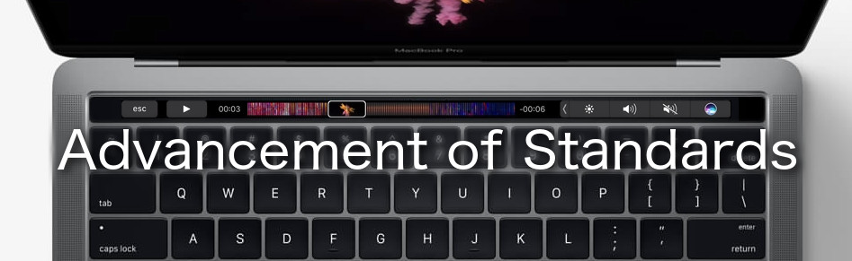

Advancement of Standards (2016/10/28)
Lately it's been rare to see a product release that really wows people, but the Apple event yesterday came pretty close. Two points that I found pretty interesting were the new Touch Bar and the distinct lack of ports other than USB-C (and a 3.5mm audio jack). In this article I discuss my thoughts on the significance of these two changes.
That New Feature
The Touch Bar breaks the mold of each new model being "Apple's Fastest/Thinnest/Lightest MacBook ever" which in recent times has been mostly viewed as lackluster as far as innovation goes. It's a long touchscreen bar that replaces the function keys with interactive software buttons, which change depending on which application you are using. It's a new and cool addition, and there are no other keyboards out there that feature an auxiliary touch screen.
Except... there are. Both the Razer Deathstalker and the Mad Catz Strike 7 keyboards have them and they were first released in 2012. But the Touch Bar actually is still different.
The Mad Catz Strike 7: by far the strangest looking keyboard I've ever seen. Note the touchscreen on the left.
Apple has the relatively unique position where their operating system (and all the apps that run on it) is limited to hardware which they have full design control of. What separates the Touch Bar from the Deathstalker or Strike 7 touchscreens is that unlike a relatively small keyboard manufacturer, Apple can effectively say
"Okay developers, here is this new thing, here is the API to use it and its functionality will be available to hundreds of thousands of people simultaneously".
As far as time invested versus return for developers, that sounds a whole lot better than
"Here is a proprietary API to allow customers who have bought this single line of keyboards from a single manufacturer in a niche market to use this touchscreen" (repeated for each different keyboard brand with a touchscreen).
One API and instant widespread adoption of this new feature is a great selling point for app developers to begin using it right away.
Frustration Today, Convenience Tomorrow.
Apple doesn't stop exercising their design control with the Touch Bar. A large source of controversy this year was the removal of the 3.5mm audio jack from the iPhone in favor of a single USB-C port. While (perhaps ironically) Apple has elected to keep the audio jack on the MacBook Pro, all other ports from previous models have disappeared in favor of 2-4 USB-C ports.
Lately the expression "dongle hell" is often used in referring to the compatibility issues that changing to USB-C will cause. Any device that uses the previous USB generation, SD cards, monitor plugs, Ethernet cables, or other types of connectors can no longer interface directly with the laptop. USB-C has implements many improvements over standard USB, including faster data transfer speeds and higher current ratings, however the new connector forces people to buy adapters to continue using their old equipment.
This has all happened before though - back in the 90s the go-to standard was the RS-232 port, as well as various other serial, parallel, PS/2, and game connectors.
This image shows PS/2 (far left, mouse and keyboard), Parallel (pink), Serial (two cyan), and Joystick (yellow) ports. All have been replaced by USB on modern PCs.
In the middle of 1996 Universal Serial Bus was introduced. It bore many improvements over the many cables it was to replace, but it was also an entirely new connector using an entirely different protocol, so it was sparsely implemented at first. Can you guess which company was noted for embracing it?
In a move criticized by many, Apple opted to exclude the then-ubiquitous floppy disk drive from their new 1998 iMac G3, included two USB ports and told anyone that wanted to continue using floppies to buy a external USB floppy drive. From then on, USB became more and more prevalent in PCs due to the growing market for devices that used it. Almost two decades later, USB is everywhere and floppies are known merely as 'the save button'. It may be reasonably assumed that a similar criticism and subsequent stubborn yet inevitable adoption may follow Apple's decision to push USB-C on the 2017 MacBook Models.
Original iMac G3 - The computer that helped kill the floppy drive.
Wrap-Up
An occasional refresher of standards is arguably a good thing - designs plagued by feature creep can be redesigned and streamlined, multiple implementations of the standard can be combined into an overall superior implementation, and nagging issues of the previous generation can be efficiently fixed. This of course comes at the cost of discomfort among users during the transition phase.
Overall, the new MacBook Pro seems to be a step in the right direction for Apple. Motivation for developers to implement functionality for a new peripheral exists because of the large number of people it will reach due to Apple's design control of their hardware. The radical and sudden adoption of USB-C has the potential to disrupt the market and increase the demand for USB-C devices, which will allow consumers to reap the benefits of it in the future.
Where would we be without change, after all?
--
The following articles were referenced in the writing of this post to get a sense for the original public reception of USB adoption and the removal of the floppy drive from the iMac:
Charles Pillar. "The 'i' in IMac Doesn't Stand for Inferior . . . or Floppy Drive." Los Angeles Times, 11 May 1998. Web. 28 Oct. 2016.
Vogt, James D. "The IMac and the Floppy Drive: A Conspiracy Theory." (Opinion Piece) OSNews. 3 Aug. 1998. Web. 28 Oct. 2016.
Garfinkel, Simson L. "USB Deserves More Support." Boston Globe Online, 20 May 1999. Web. 28 Oct. 2016.
This article is dedicated to the 2000 iMac G3 I got from a garage sale for $10 in 2009. I loved that computer until the power supply died in 2012. It's still in my basement, waiting for me to expand my electronics knowledge to the point of being able to repair it.
© Michael Kafarowski 2019
 Site built completely from scratch and with love by Michael Kafarowski!
Site built completely from scratch and with love by Michael Kafarowski!